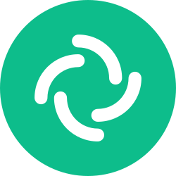
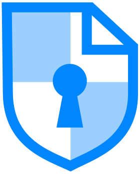
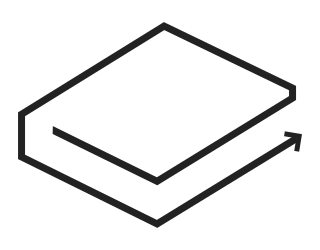

-
In General:
- Stay away from social media. When really necessary just use a private messenger suggested below.
- If you can't remove it later, then don't put it online.
- Avoid unauthorised access:
- Use a password manager
- Use encryption whenever possible.
- Don't leave your devices unattended.
- Don't plug in random stuff in your devices.
- Disable Bluetooth, WiFi, etc when not required. Turn on Airplane mode as much as possible.
- Be very stingy with the permissions you grant to users or apps on you network or devices.
Remark: Kindly stop using an operating system that collects data like Windows 10 or the custom flavored skinned Android by your phone's manufacturer, you deserve something better. Choose an alternative here. But no matter which OS you choose beware that the desktop operating systems were not designed with securiy in mind so try avoiding desktop as much as possible and sticking to an updated mobile device preferably running one of the OS recommended here.
-
Operating system:
-
📱 Phone:
-
CalyxOS
CalyxOS is the only worthy Android mobile operating system after GrapheneOS that puts privacy and security into the hands of everyday users. Plus, proactive security recommendations, built-in firewall, offline backup utility, multiple profile support, global VPN toggle, microg support, and automatic updates take the guesswork out of keeping your personal data personal. CalyxOS is developed by Calyx Institute, a 501(c)(3) non-profit organisation.
This is highly recommended for the users who want privacy with convenience of some Google dependent services.
A Linux distribution is an operating system made from a software collection that is based upon the Linux kernel and, often, a package management system. (Rolling releases are preferred over stable release distros).
- Absolute beginner/Migrating from Windows or MacOS:
-
Fedora is an operating system developed as a community project and sponsored by Red Hat (a subsidiary of IBM). It prefers flatpak as a dominant pakaging style. It follows a semi-rolling release cycle. Each Fedora release is supported for one year, with a new version released every 6 months. It tends to be very up to date both in terms of applications and the Linux kernel itself. If you are worried that you many unintentionally break your system then have a look at Fedora Silverblue (uses GNOME) or Fedora Kinoite (uses KDE). Both of which are immutable variants of Fedora with a strong focus on container workflows.![[popos logo]](./resources/fedora.svg) Fedora
Fedora
Remark: If you are currently using an Instant Messenger like Telegram, LINE, Viber, WhatsApp, or plain SMS. Please pick an alternative here.
-
💬 Messenger:
-
Requires phone number but easy to begin with:
-
 Element
Remark: If you are currently using an privacy hostile E-Mail provider like Gmail, Outlook, Yahoo, etc. Please pick an alternative here. Email is not private and inherently insecure protocol so try dropping it in favor of a secure messenger suggested above. But in cases where you must have one, stick to the recommendations below.
-
📧 Email Provider:
Remark: In the world of data breaches a password manager and 2FA are your best defenses. But not all password managers are equal. Secure and trusted ones are listed here.
-
🔐 Password Manager/2FA:
-
KeePass (Offline) (Highly Recommended)
KeePass (Android) KeePass (Desktop)
Remark: If you are currently using DNS service provided by your ISP (and gracefully providing them with a list of every internet resource you access along with the timestamps and duration of your access) then switch to the provider recommended here. An additional benefit: Changing DNS may open website that were previously blocked.
-
DNS Provider:
DNS should be setup with the native method supported by your operating system rather than a third party application. If your setup requires blocking of ads, trackers, etc. then the recommendation is to use local blocklist setup rather than using a ad blocking DNS.
Remark: If you are currently not using or using a bad/fake VPN then its highly recommended that you switch to the trusted no-logs VPN providers recommended here. Although VPN is not a silver bullet yet you will have two main advantages: the websites you visit wouldn't know you IP Address. For even better privacy consider TOR
-
💈 VPN Provider:
-
IVPN is a VPN service offered by Privatus Limited based in Gibraltar. Privatus Limited has been independently audited by cure53 and has undergone a no-logging audit and a comprehensive pentest report. They Accept Bitcoin, Monero, and Cash as payment methods and all of their clients are open source as well.
Remark: Use TOR browser for most of your browsing and use Bromite or Chromium when doing something that inherently requires you to be identified like banking. A browser is your gateway to the internet. Make sure you don't have uninvited guests (trackers/ads) or your Jewelry (private data) hanging out the window. If you are currently using a ricked gateway like Google Chrome, Microsoft Edge, etc. it's highly recommended that you switch to the ones recommended here.
-
🌐 Browser:
-
Prioritizing Privacy:
Chromium (On Desktop)
Chromium is a free and open-source web browser, principally developed and maintained by Google. Google uses the code to make its Chrome browser.Remark: Your notes should be your notes, don't have a public audience for your private stuff (Cough-Google Keep, Microsoft OneNote, Evernote). Switch to the recommended alternative here.
-
📝 Note Taking:
Remark: If you are currently using an Office suite like Microsoft Office. Please pick an alternative here.
-
📔 Office Suite:
-
Works Offline:
-
OnlyOffice is a free software office suite developed by Ascensio System SIA, a company headquartered in Riga, Latvia. It features online document editors, platform for document management, corporate communication, mail and project management tools. It is highly compatible with Microsoft Office. If you are looking for complete replacement of say Microsoft Office, then it's your best bet.
-
 CryptPad
Remark: Share your files between your devices, with your friends and family, or anonymously online. Switch to the recommended service here.
-
📤 File Sharing:
Remark: For your own sake STOP USING GOOGLE. Their results are biased and of course they have no privacy. Switch to the recommended service here and search anonymously online.
-
🔍 Search Engine:
Remark: Try doing as much of your work offline as possible but if you need a cloud provider then use the one recommended here.
-
💭 📦 🗘 File Storage/Cloud/Sync Services:
Remark: We all know how YouTube doesn't care neither about its creators nor viewers. I urge you to leave YouTube (creators can sync all their content to directly to Osysee) and join me on Odysee that's ready for WEB 3.
-
🎥 🎧 📰 Video/Audio streaming/sharing and Blogging:
-
 LBRY